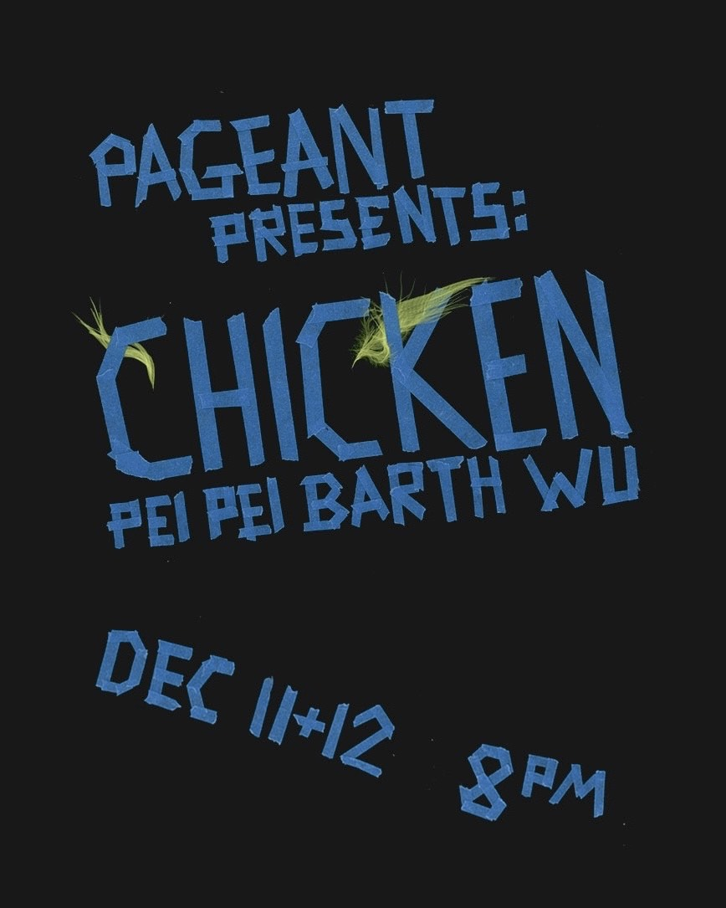
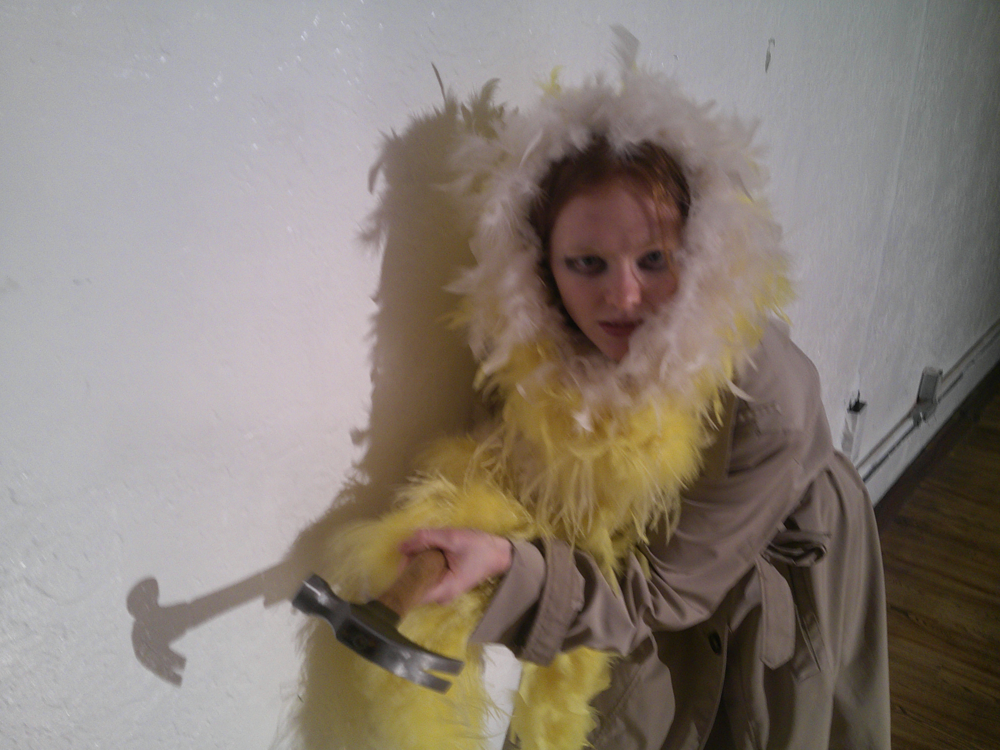
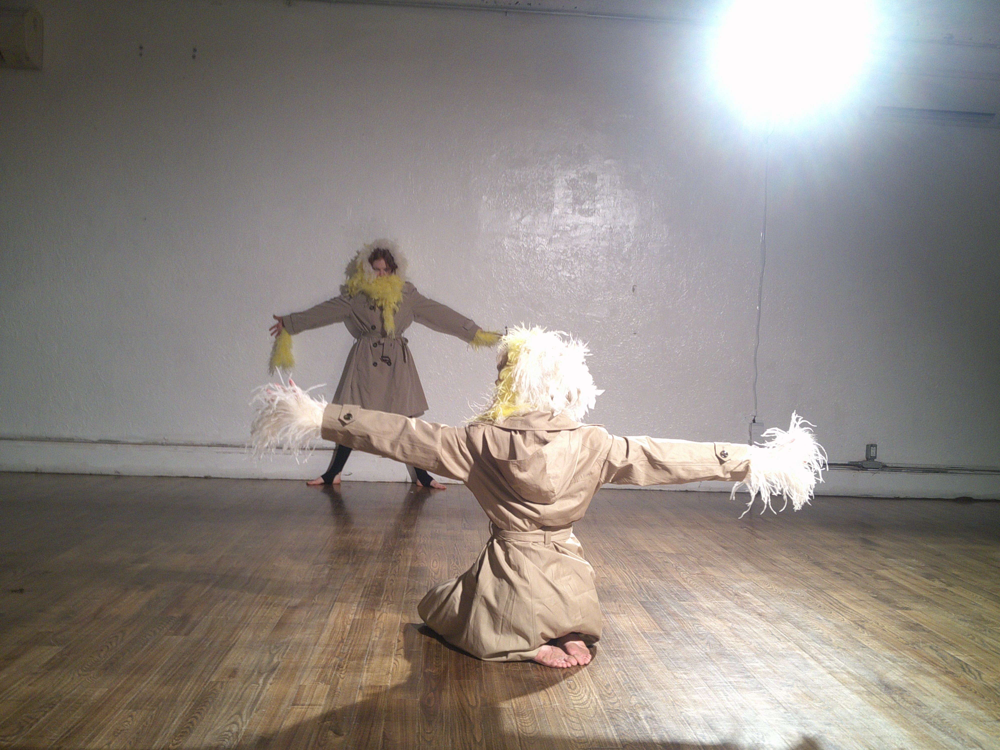
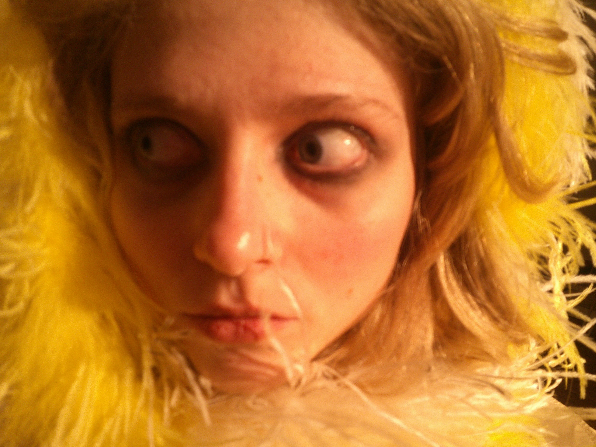
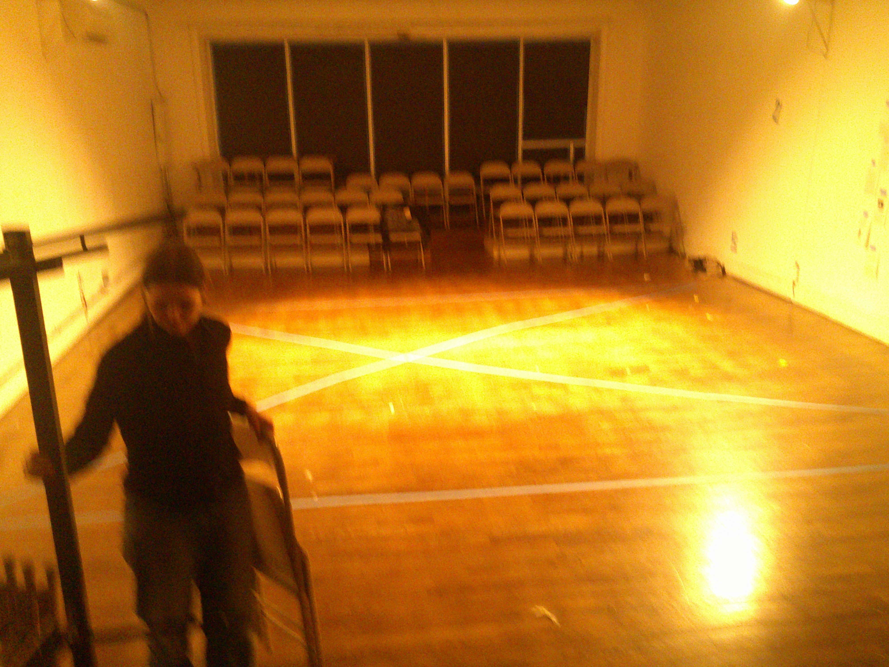
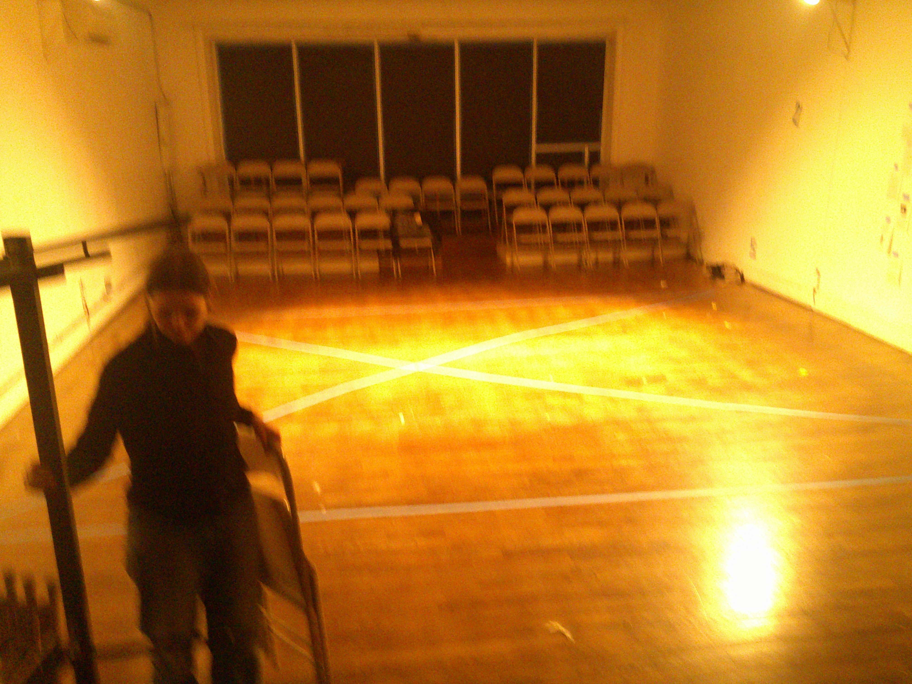
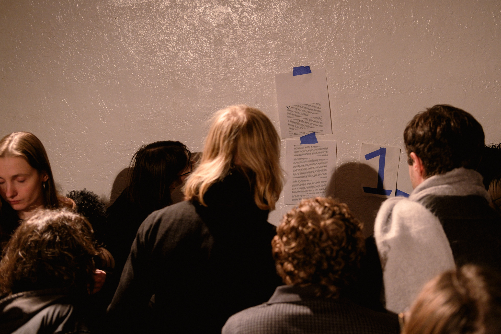
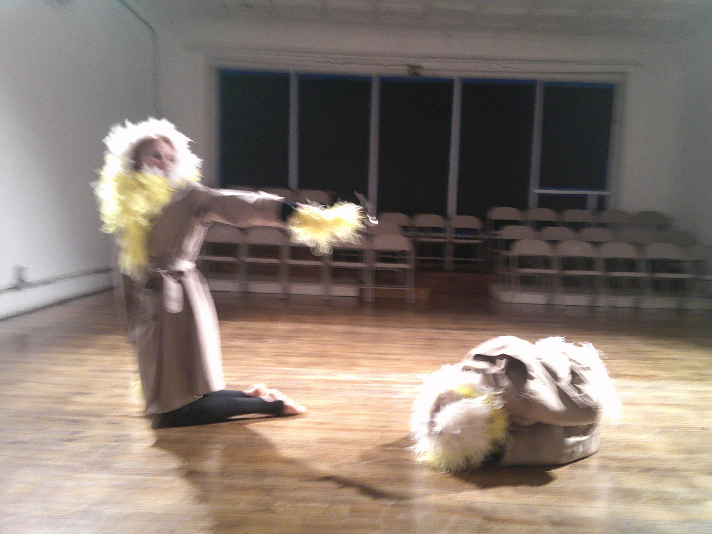
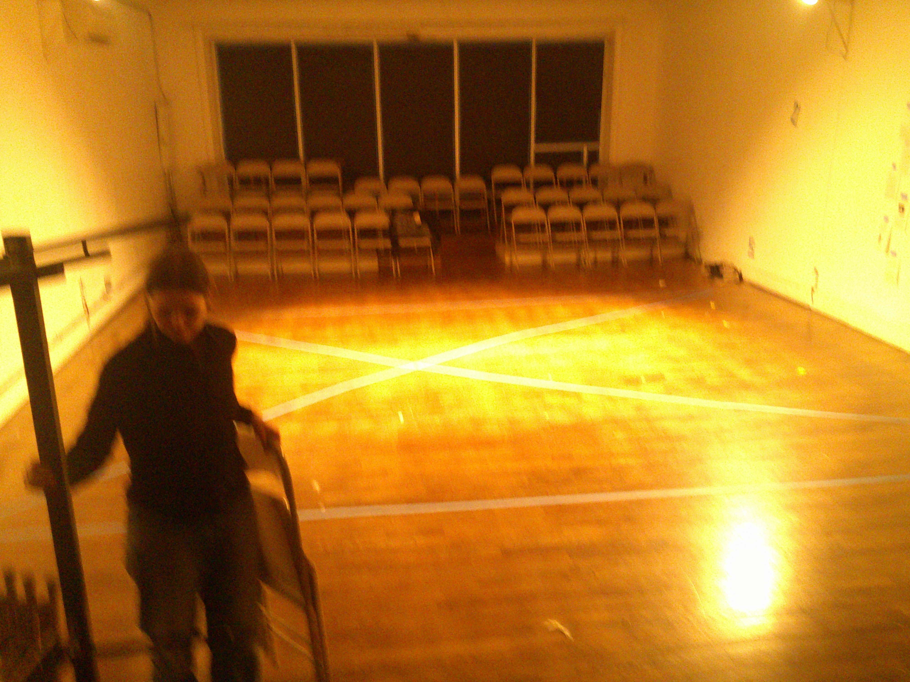

Chicken
Pei Pei Barth Wu
Dec 11 & 12 at PAGEANT
Performed by
Henry Adeson
Justine Florence
Angelina Hoffman
Gwendolyn Knapp
Weston Priest
Music by
Jack Whitescarver
Original Text by
Henry Adeson
DownloadAdditional Thanks
Matt Norman for drums
Josie de Anda for the feather hands




 


Photo by Kayhl Cooper

Photo by Kayhl Cooper

Photo by Kayhl Cooper

Photo by Martin Garcia


Rehearsal
The chicken woman who spits when she speaks is a spastic producer of cultural forms and ornaments. Her propensity, as evidenced by the chicken ballet in La Fille Mal Gardée and the Papageno couple in Die Zauberflöte, is towards genre, vaudeville, and pantomime—forms in which gesture overrides free-thinking independent consciousness in festive humiliation. –– Henry Adeson